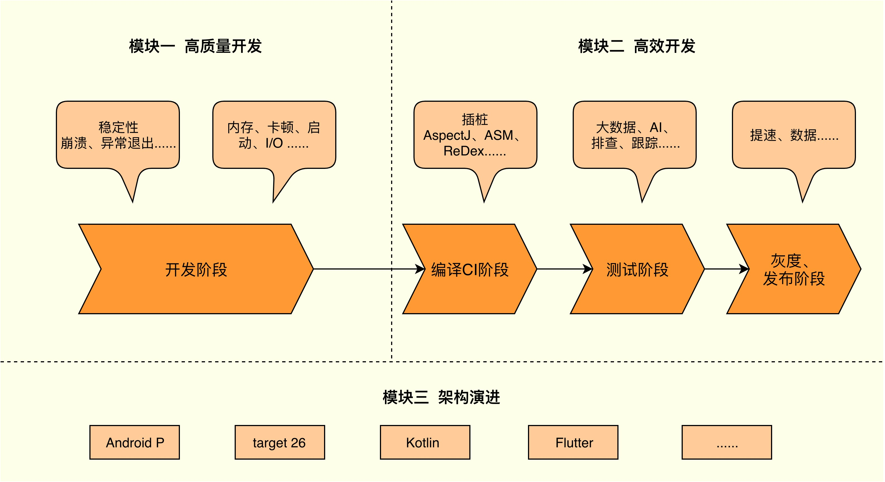
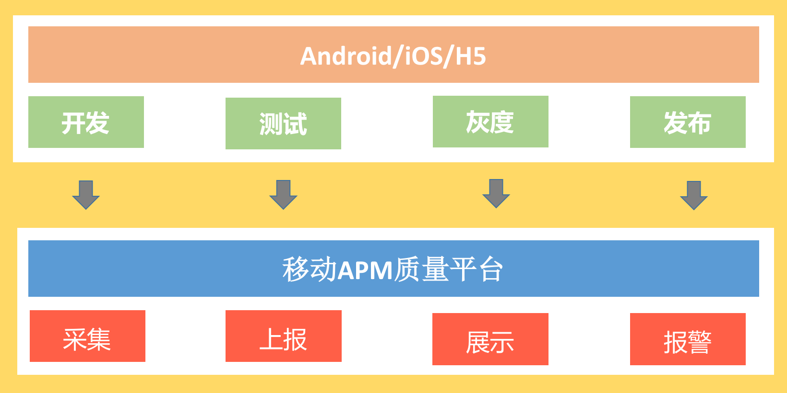
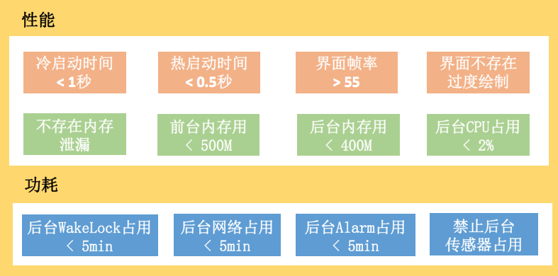

今年年初，我去上海参加一个移动技术会议，问了很多开发者最近在忙啥。令我非常惊讶的是，大家讲的最多的还是用户体验和应用质量。特别是出海东南亚的同学，面对一堆 512MB 内存的设备、无处不在的弱网络流下了无助的眼泪。
除了内存优化、弱网络优化，想做一款高质量的应用还远远不止这些。一方面，我们面对的环境越来越复杂。过去的 iOS 开发者可能做梦也想不到，现在也要开始适配屏幕和双卡双待了，更不用说 Android 那多如繁星的机型、厂家和系统。如果你的应用也要出海，那么还要面对几十个国家不同的语言、环境。
另一方面，我们的代码跟业务也越来越复杂了。先不说大量“年久失修”的历史代码，业务越来越复杂，如何管理好几十上百个模块？还要面对 React Native、Flutter、TensorFlow 等各种语言跟框架堆积在一起的情况，再加上复杂的环境和庞大的系统，想想做一款高质量的应用真的不容易。
从应用交付的流程说起
既然打造一款高质量的应用那么困难，我们可以先从哪里入手做些什么呢？我的方法是把应用当成一件商品，想象一下商品在流水线生产的过程，那么怎样在每个步骤做好“质检”呢？这就要从应用交付的流程说起。
在我看来，一个应用至少会经过开发、编译 CI、测试、灰度和发布这几个阶段。每个阶段需要关注什么问题呢？
1. 开发阶段。在面试的时候，常常有人说自己熟练掌握各种开发工具。但是，我们真的懂吗？就拿我们比较熟悉的耗时分析工具 Traceview 来说，它背后的实现原理是什么？能不能做一个完全没有性能损耗的 Traceview？或者怎么样将它移植到线上使用？
2. 编译 CI 阶段。如何防止代码不断地恶化？怎样进一步优化性能？d8 与 ReDex 有什么神奇的黑科技？如何利用好 Coverity、Infer 这些静态分析工具？这部分可能需要一些编译原理的知识，你会发现移动开发也有很多值得深入研究的东西。
3. 测试阶段。我们常说敏捷开发，用户是最好的测试。遇到问题在线上反复试错，对自己、对用户都十分痛苦。我们希望可以做到测试“左移”，尽可能早地发现问题。但是很多时候我们不是不想测试，而是发现测不出什么问题。那么怎样提升实验室发现问题的能力呢？如何尽可能地模拟用户的操作路径？做好测试并不容易，自动化测试结合 AI 或许可以帮助我们解决一些痛点。
4. 灰度和发布阶段。动态部署流行起来之后，很多开发变得松懈起来。有问题发补丁，一个不行就两个，两个不行就十个。怎样去保证产品质量？很多线上问题概率很低，基本很难复现，比如对于一个印度的用户，我们希望有一个远程的听诊器，而不需要把用户拉到我们的手术台上。
对照应用的交付流程，我来介绍一下专栏的学习方法。专栏“高质量开发”模块主要对应的是开发阶段，你可以带着实践过程的困惑去深入学习开发需要的各种武器。专栏“高效开发”模块主要对应编译 CI、测试、灰度和发布阶段，你可以结合实际工作全面提升整个应用交付的效率。另外，我认为一个好的架构可以减少甚至避免团队出错，也是打造一款高质量应用非常重要的一环，因此我会在最后的“架构演进”模块和你聊聊如何设计一个好的架构，以及架构该如何选型。

移动 APM 质量平台
请你思考一下，在应用交付的这几个阶段中，我们对高质量的目标和实现方式是否一样呢？开发阶段有开发人员，可能希望采集尽可能多的数据；测试阶段有测试人员，可能更针对实验室环境或与竞品对比进行测试；灰度和发布阶段可能也有专门的运维人员，策略会相对保守一些。很明显，不同阶段我们对高质量的目标跟手段可能不太一样。
一个公司有多套质量系统，这在大公司是非常普遍的现象。我们希望有一个统一的平台，整合应用的人员和开发流程，这就是我们常说 APM 质量平台。
APM 的全称是“Application Performance Management”，即应用性能管理。据我了解，国内像阿里、腾讯、美团点评、饿了么、爱奇艺这些公司都在大力投入。Google 今年也发力 Android Vitals 监控，新增了耗电、权限管理模块。那么 APM 质量平台究竟有着什么样的魅力呢？
1. 统一管理。A 同学写了一个耗时监控工具，B 同学写了一个内存监控工具，它们在不同的仓库，上报格式可能不太一样，各自都搭了一个简单的页面。如果想评估一个应用的质量，总是要去几个系统汇总数据，想想都费劲。
2. 统一三端。一个公司可能有多个应用，一个应用也可能有 H5、iOS、Android 多个端。我们希望它们只是采集数据方式有所不同，上报、后台分析、展示、报警都是共用的。随着技术的发展，我们可能会增加 React Native、Flutter 这些新模块的监控，这个平台应该是统一演进的。当然我们非常希望业界有一套开源的方案，大家可以一起优化。

那这个质量平台需要关注哪些问题呢？这需要看我们用户关心什么问题。有的问题可能是致命的，像崩溃、卡死、白屏。另一大类问题就是性能问题，安装包大小、启动、耗时、内存、耗电、流量都是这一个范畴。在这个专栏里，我并不会教你如何从头搭建一个 APM 平台，我会更期待你掌握背后所需要的知识，它们主要包括：

由于 Android 版本的碎片化和国内 Android 生态的乱象，或者换句话说，“Android 开发者很苦，国内的 Android 开发者更苦”。在 11 月举办的 Android 绿色联盟开发者大会上推出的应用体验标准，有对应用的兼容性、稳定性、性能、功能和安全做了详细的定义。我贴张图，你可以看下。

在极致性能的同时，我们希望能更进一步地打造“绿色应用”。在这个过程中，一个全面而强大的 APM 质量平台会是我们坚实的后盾。当然对于大多数中小开发者来说，我们更建议选择成熟的第三方服务。但深入了解它们背后的原理，无论是对我们如何选择合适的服务，还是日常开发工作都会有很大的帮助。在学习完上面的这些内容之后，你也会觉得其实“性能优化”并不是那么“高不可攀”，我们也可以慢慢地迈向“性能优化专家”之路。
不过我们需要明确一点，虽然移动 APM 质量平台可以帮助我们快速发现和定位问题，但是监控并不能保证实现高质量，这里最关键的永远是人，而不是系统。为什么呢？我举两个小例子。
你在工作中可能总能遇到这样的场景，我管它叫反馈问题三连击：“是我的问题吗？”“能复现吗？”“你的测试靠谱吗？”。虽然通过 APM 质量平台可以减少推卸责任，但有些人的做法通常还是发现空指针加一个判空，发现并发问题加一个锁。这里的空指针真正原因是什么？这里判空了后面的逻辑是否还会运行正常？有没有更加好的方法或架构可以避免这个问题？我们真正应该反问的是这三个问题，把“质量观”深入骨髓，真正去想要得到个人成长，深挖背后的原因。
第二个例子是，我发现许多人都在问题无法忍受，或者说是老板无法忍受的时候才去开启各种优化专项，但事后又不了了之。我们很多时候都在用战术的勤奋掩盖战略的懒惰，性能优化的关键在于如何解决存量问题，同时快速发现增量问题。APM 质量平台只可以协助我们，并不能解决组织内部的心态问题。
总结
看到这里可能你会有这样的疑问，我们在小公司根本没有机会学习到这些东西呀？确实如此，个人与公司一起成长是最快速，也是非常难得的事情，但并不一定人人都会有这样的机会。从我自己的经验来看，在搜狗、微信会遇到各种各样的疑难问题，也可以有很多时间去研究，让我在解决问题的过程中获得成长。
幸运的是现在大家都更加乐于去分享，在专栏和技术会议中，我们可以看到很多成熟的解决问题的经验和思路，在 GitHub 我们可以找到很多优秀的源代码。在这个环境下，我们需要耐得住寂寞，多抠一些细节，多深入研究，多停下来总结。
我来分享一个我的故事，2013 年初我去面试微信，前面都不太理想，最后还是通过了。后来有一次跟面试官闲聊说起这个事情，他们认为有一件事情打动了他们。2012 年的时候，LeakCanary 还没开源，我在使用 MAT 做内存泄漏分析的时候总觉得很不爽。为什么不能做自动化？为什么看不到 Bitmap 的图片？我当时深入研究了内存文件 Hprof 的格式，做了几个小创新：
1. 实现内存的自动化测试。在自动化测试后回到首页，这个时候获取应用的内存快照。自动分析内存中 Activity 实例，正常情况应该只存在一个，其他都认为是泄漏。为了支持正式包，还做了通过 mapping 文件反混淆 Hprof 文件的功能。
2. 查看图片。自动将内存中重复的图片、比较大的图片转换成 PNG 格式输出到文件。
现在看起来这些功能并不是太难，但如果放到六年前，想到而且能做到的人相信并不多。讲这个故事还是希望你能在工作和实践中多停下来思考，多深入研究一些细节，很多看似不经意的思考和创新，可能在日后发挥更大的价值。
课后作业
“纸上得来终觉浅，绝知此事要躬行”，只有通过实践，运用到自己的项目里面，才会对知识有更深入地理解。
我为专栏的“课后作业”环节专门设计了可供你操作实践的 Sample，并在 GitHub 新建了专栏的Group，后面会陆续将这些 Sample 放到上面。课后作业主要是根据 Sample 进行操作，需要你理解实现原理，并在极客时间 App 专栏文章下面的留言区提交你的学习总结和思考。我和极客时间为认真提交作业的同学准备了丰厚的学习加油礼包，里面包含我推荐的经典图书、极客时间周历、专栏阅码等礼品。我还会选出坚持参与学习并分享心得的同学，在专栏模块一、模块三结束时，分别送出 2 张 2019 年 GMTC 大会的门票。
为了更好地给同学们答疑，我邀请了我的朋友孙鹏飞作为课程的“学习委员”，他将不定期讲解我们 Sample 的实现原理。鹏飞是 Android 资深开发工程师，现在负责某知名网约车平台司机端的业务开发、性能优化等工作。我们的学习委员对系统框架、虚拟机、性能优化等都有很深入的理解，实战经验也很丰富，相信鹏飞的加入可以更好地帮助你掌握课程的要点，并能解决实践中的问题。
今天是课程导读，也正式开启了我们接下来 3 个多月的学习之旅，所以最后特别邀请你在留言区也做个自我介绍，介绍下自己，聊聊目前的工作、学习情况，或者说说遇到的具体问题和困惑，也可以写写自己对这个课程的期待，让我们彼此有更多了解。
希望你能够积极参与进来，咱们教学相长，共同进步。
COMMUNITY NOTES
读者评论
大家好，我叫孙鹏飞，是这个专栏的“学习委员”，工作时间快6年，在职业生涯中走了很多的弯路，一直以来大多都靠自己摸索和兴趣，以及或多或少的知识焦虑感，有幸认识很多高手，从中学习到很多东西，其实获得的更多是思考方式和获取信息的来源以及技术盲点，深感自身不足，还在学习中。不善言谈，小开发一枚。希望这门课程可以让大家有所获得。
6年android开发的妹子一枚，报名的原因是，知识面比较窄，学习的不深入，希望有所收获。
开发两年的android 妹子，一直游走在小公司，一个人独立开发，总想着要约束自己规范，做好性能优化，以及更深入的研究底层，但是一个人去做这些的时候，总是做着做着就不了了之了，感觉现在学习太片面，不够深入，希望在接下来的时间，能够提升自己，希望自己更深入的去学习，探究，提高自己能力，加油💪
刚入坑的妹子一枚，大家的赞在哪里
16年开始年初开始安卓开发，第一家公司呆了不到半年倒闭了，现在还在第二家公司，这2年时间接触了很多，有ffmpeg编解码音视频，opengl实现鱼眼摄像头视频图片展开，蓝牙通信，soket通信，基于p2p的视频直播。最新的项目也用到了kotlin，mvp+rxjava+retrofit+dagger，组件化。一直在追新的东西，怕自己落后了。但是前段有些迷茫了，因为这些技术我都还停留在用的阶段，意识到这点后我就打算先去系统的了解一下音视频的解码这一块，把雷神的博客关于音视频的翻了一遍，真是写的太好了，感谢雷神！！后来随着公司的项目进展，音视频这块暂时用不到了，又开始了一个车机项目，这个项目涉及到一些较底层的方面，由于这个原因我买了《安卓源码情景分析》来加深对安卓系统的理解，但是看了这本书后觉得自己的基础还是差了些，好多地方看的云里雾里，进度缓慢。后来也是看有的同学转做java了，想想安卓现在不火了，音视频直播也不在风头了，又买了一些java的和区块链的课程，每天加班完回来看看视频，学了html,js,css, servelet，那段时间真的很忙，公司也很忙，导致这个java的学习计划又搁浅了。然后就是现在了，这段时间没那么忙了，闲下来时无聊就和同事一起玩起了王者荣耀(看了老师上一篇文章后当场卸载了)，但是总有一种为了消磨时间才玩游戏的感觉，并没有觉得很好玩，这可能就是焦虑和不安吧。这两天又抓起了《安卓源码情景分析》，这次打算老老实实的啃一遍了，顺便巩固一下c++，同时买了《数据结构与算法分析java描述版》，《计算机操作系统第四版》，我不是科班出身的，之前也觉得数据结构和操作系统没什么用，但是随着开发经验的增长，想要突破现有的瓶颈，我发现这些我之前没有学过的课还是必不可少的，同时我也希望能像科班出身的同学们一样打好基础，只有打好了基础才有更高的可能性，为了这点我会不断地努力，同时希望张老师能帮我指点迷津，让我接下来的路走的多些踏实，少些不安和焦虑，谢谢！
5年Android开发了，感觉有些迷茫。认真思考下迷茫的原因，主要是对自己的不自信，那又为何不自信呢:积累不多。平常遇到问题，可能第一时间去百度谷歌搜一番，咦，这种方法也许能解决我现在的问题，往往问题解决了就觉得了事了，很少去深层次的思考问题，总结问题，将它作为自己的一个积累。另外一个就是很少去主动有计划的学习。即使学习了，也会东学学西学学，这个学不了几天又去学另一个。学习计划不够明确，不能够静下心来。关注这个专栏，希望自己能养成良好的习惯，提高自己的Android技能，变得更加自信。加油
毕业8年，做过2年JavaWeb，做过2年嵌入式，做过4年Android应用开发。7月从腾讯裸辞，原因是看不到自己的成长，应该是没有用心。太多的时间和精力都放在了业务上。一直被业务追着赶着，突然间开始迷茫，发现自己欠下了太多的债。也时常思考，怎样算是一个合格的程序员？ 有时候知道的太多也是一种痛苦，建立自己的一套知识体系，是一个漫长的过程。年限并不能代表一个人的能力的强弱。有时候年限反而成为了弱势的标志。如果一开始能够在某个领域钻研，建立自己的技术壁垒，或许今天也不会这么痛苦。希望时间还来得及，希望自己还能够坚持。分享下一个书单：####面试《剑指Offer》《程序员面试金典》####应用《第一行代码 Android》《高级Android开发强化实战》《Android技术内幕：应用卷》####Framework《深入理解Java虚拟机--JVM高级特性与最佳实践》《深入解析Android虚拟机》《深入理解Android 卷I》《Android技术内幕：系统卷》《Android系统源码情景分析》《老罗的Android之旅》 https://www.kancloud.cn/alex_wsc/androids/401771####安全《Android应用安全防护和逆向分析》####性能《Android移动性能分析》《Android性能优化最佳实践》####并发编程《Java并发编程的艺术》####架构师《APP架构师实践指南》####组件化《Android插件化开发指南》《深入探索Android热修复技术原理》####Native《Android C++高级编程：使用NDK》《FFmpeg从入门到精通》《音视频开发进阶指南：基于Android与IOS平台的实践》《OpenCV Android开发实战》####Android 驱动开发《Android系统移植和驱动开发》《Android驱动开发权威指南》####网络《图解HTTP》《图解TCP/IP》####设计模式《Head First 设计模式》《图解设计模式》
工作六年，Android开发从15年3月开始，到现在快四年的时间，二线城市的小公司，中间还有一段时间被拉去坐Javaweb与JS前端，算是3年的Android开发经验吧，现在公司里面只有我一个Android开发人员。从今年的11月份开始感觉有一种很焦虑的感觉，主要的原因就是小公司里面的技术交流太少，随着移动开发的遇冷，公司也没有扩大移动团队的计划，个人感觉遇到了巨大的瓶颈，同时也倍感孤独与凄凉。参加这门课程主要的目的是希望能够拓宽自己在移动开发方面的视野，帮助自己突破目前的瓶颈，同时也希望能够找到能够一起交流互相学习的朋友，缓解自己的孤独与凄凉。
奶爸一名，二线城市，三年经验，四家公司！
4年安卓开发妹纸，很尴尬的是，其中休了六个月产假，怀孕修养了大半年。但是，现在孩子2岁了，我也更用心学习起来了，感谢专栏作者。期待与大家一起学习！
乱入一枚三年iOS程序猿，可以拓宽眼界和编程的边界。
工作：5年多的工作经验，一只从事Android应用开发，平时除了业务迭代，就是自我学习。学习：今年跟着罗升阳的博客学习了一遍android源码，在极客时间已学习的有：朱赟的技术管理，java核心技术36讲，硅谷产品实战36讲。正在学习的有：数据结构与算法之美，Android开发高手课。具体问题：聊聊前段时间项目中遇到的一个bug：主页面是一个Activity和4个fragment，使用加载方式一：使用FragmentTransaction add添加,且在点击的时候用show，hide操作。使用加载方式二：前面的方式都没变，但是在每次show，hide之后调用了FragmentManager.executePendingTransactions.方式一换成方式二之后，在某种场景下，fragment中的View会NullPointerException，因为bug是线上报出来的，虽然是偶发，但是因为用户比较多，所以总量很大，最后不能不将方式修改回去，虽然问题解决了，但是最终的原因始终没有找到，当然我也找了好几天，试了好几天，源码也看了，也debug了，但始终不知道原因是什么，如果大家有知道的，还望赐教。困惑：我的困惑应该跟大部分人都一样，Android应用开发者该掌握那些知识，尤其是方向，因为我们更多的担心不是现在，而是未来。期望：希望在这里可以找到一些方向，至少开阔眼界。
Android 开发了两年半了，一直都是独立开发，遇到问题百度谷歌，身边没有人带路，一直靠自己摸索。也在一直写业务代码，总觉得差了点什么。觉得自己就是停留在会用工具的表层上，不了解深层原理，出现问题不会分析，只依赖搜索引擎，是时候提高一下了
10年开始做android，经历了到处抢人到现在的市场成熟，带团队，也面试开发人员。人到中年，感觉安卓的路不好走了，年初学了区块链，转行面临低薪水，辗转反侧，还是想在安卓领域钻研更深。希望能多讲些大厂的系统的实现方法，比如apm的各个模块都实现什么功能，有没有来源的替代。
14年销售转行学习安卓开发，从纯做业务的小白一步步成长到带领小团队，逐渐接触到性能优化，厂商适配工作，内存，卡顿，耗电等，平常会看一些技术书籍，持续关注学习技术博客，偶尔自己写博客，工作之余在学习NDK，架构，组件化，热更新等安卓进阶知识，也保持对kotlin flutter AI等新技术关注实践，由于非科班出身，可能以实践解决问题居多，多数时间知其然不知其所以然，较少时间来提升对系统运行原理，通信机制，底层架构，数据结构，算法等知识的系统学习，自己核心竞争力不强，感觉遇到一些瓶颈想突破，能有机会学习大厂大神实操经验倍感珍惜，希望离一线大公司技术能力的差距小一点，希望通过专栏学习到提升自己技术核心的方法，也能增加点跳槽加薪的筹码，能有机会进去像BAT 这样的一线互联网公司最好啦！！给自己加油打气！！！
Android 开发三年，在目前公司经历了起码四个 0 到 1 的开发项目（基本就搁置），但因为大部分都是 2B 项目，用户量上并没有很多，没有系统的优化经验。现在一个人负责公司主项目 Android 端的维护迭代，几十万用户的量级，没有经历过这个项目的 0 到 1。（偶尔还有其他项目的需求）目前有几个棘手的地方：1、项目框架老旧，耦合度很高，业务复杂，角色复杂，维护成本高;2、由于项目熟悉度不高，用户反馈 BUG 的流程格式不规范，导致排错定位困难;3、想花时间重构代码，一是怕能力不足，二是人力不足。
带着问题来的，我们的应用的用户都是户外作业人员，需要能在后台运行时，不被系统杀掉，还要在后台能稳定运行。现在不同型号的手机都有专门的设置，包括后台运行、允许高耗电等设置。但是开始这些权限后，系统还是会把应用杀掉。像这种需求，能否做到后台稳定运行。并且稳定获取地位呢？感谢！
自己15年毕业，毕业前有半年的实习，我从实习到现在一直从事安卓开发，期间有一年做过framework以及系统应用开发，现在感觉自己到了瓶颈，想去大公司证实自己，但面试一直碰壁，大大打消了我的积极心。目前在一个小公司，基本一直做业务开发，感觉技术沉淀比较少，发现面试没有拿得出手的东西，并且就目前的大环境来看，内心也有些迷茫，不知道接下来该怎么做。
12年开始接触Android开发,一直在在外包公司呆了6年时间,9月份跳到了现在的公司,做自己的产品,刚来的第一个月,优化了一些内存大小,安装包大小,觉得性能优化做的还差很多,希望学习此专利能够深入学习性能优化.
大家好，深圳程序猿一枚，15年来到深圳开启了软件开发之路，一直给自己定位的目标是android游戏开发，希望进入腾讯。但是这几年来一直在嵌入式行业折腾，一直感觉没有进步，现在开始在一家环保硬件公司负责物联网业务，只有我一个人，纯外包，感觉一直在偏离轨道，有点迷茫，但是又不想放弃android，总感觉自己没有拿的出手的东西，独立开发经验很欠缺，毕业五年了，还是没有底气的感觉，今年是成长最快的一年吧，希望现在继续努力还不迟，准备买个MACBOOK开启疯狂代码时代，希望自己能够坚持坚持再坚持。